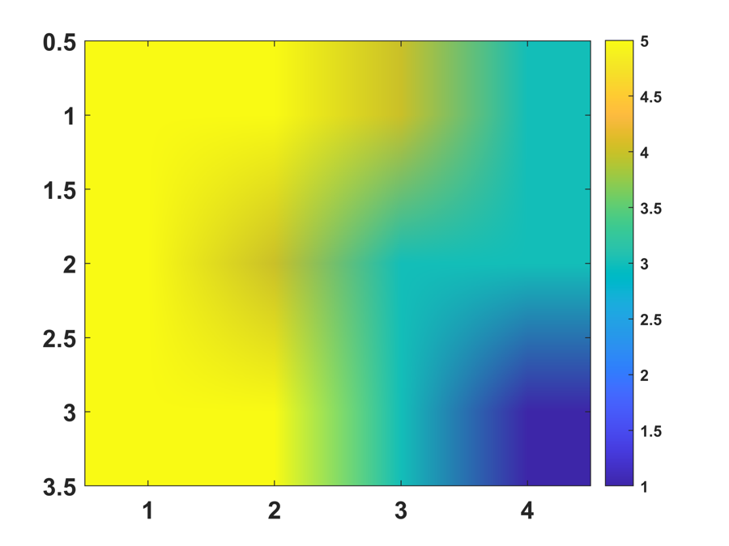
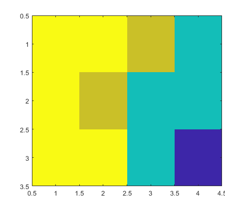
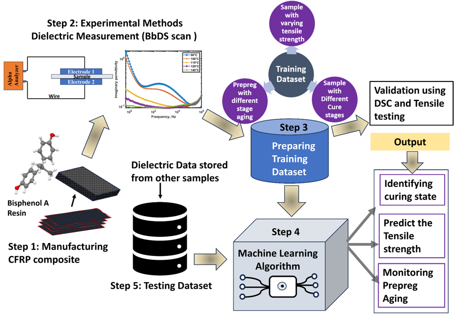
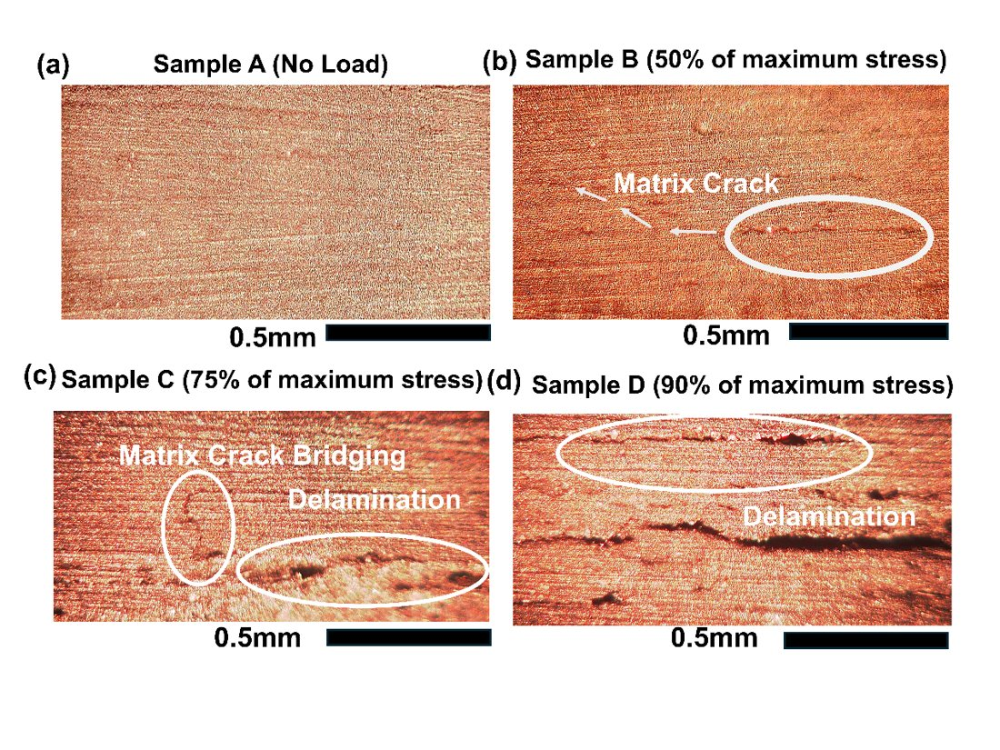
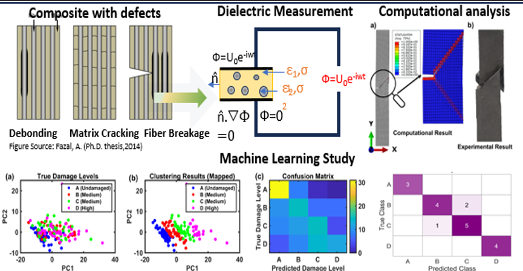
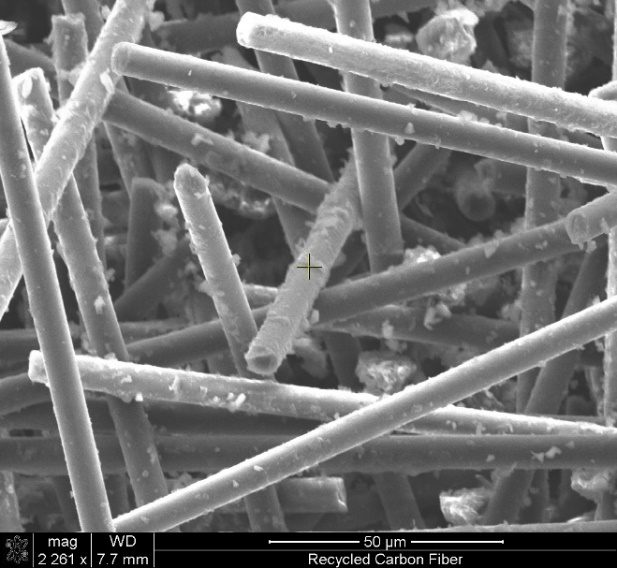
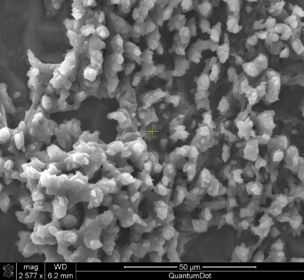
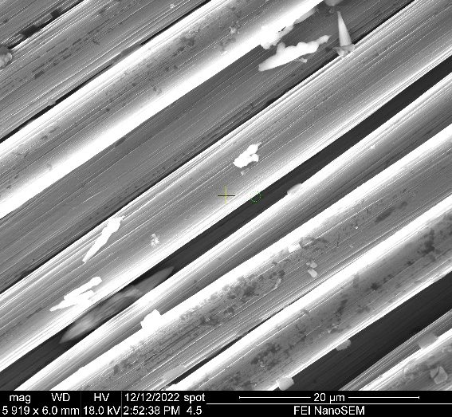

One material,
followed through its whole life
My PhD built a dielectric assessment framework for fiber-reinforced polymer composites. My work since then asks how far models of such systems can be trusted.
- Prepreg aging
Is stored material still fit to use?
- Cure and quality
Did the part cure as intended?
- Service damage
How damaged is it, and where should it go next?
- End of life
How do we recover and reuse the fiber?
How the measurement works
Broadband dielectric spectroscopy applies an alternating voltage across a sample and records the current's amplitude and phase shift across frequency. Polymer chemistry, moisture, and damage all change that response, and the part stays intact.
Prepreg aging
Prepreg keeps slowly curing during room-temperature storage. As it aged, enthalpy fell and dielectric relaxation shifted, and those changes tracked the mechanical performance of the final part.
Fitted Havriliak–Negami parameters
| Sample | Δε | τ (s) | α | β |
|---|---|---|---|---|
| Non-aged | 8.68 | 0.63 | 0.48 | 0.24 |
| 10 days | 4.80 | 1.51 | 0.48 | 0.25 |
| 30 days | 2.45 | 2.19 | 0.48 | 0.26 |
| 40 days | 1.72 | 2.77 | 0.48 | 0.24 |
Cure and quality
A coupled model links heat transfer, cure kinetics, and dielectric response, so a dielectric reading can be interpreted as cure state. Machine learning then turns measurements into a degree-of-cure map and a strength estimate without destructive testing.



Sorting by damage
A damaged composite and an undamaged one should not take the same path at end of life. Here, about 190 samples loaded to set fractions of breaking load were measured dielectrically and classified by a neural network. Damage history also changed how resin came away during pyrolysis.


Recovering and reusing fiber
I compared several routes for waste prepreg and cured composite: plasma treatment to reuse expired prepreg, chemical fiber extraction, carbon quantum dots made from trim waste, and citric acid-assisted electrochemical recycling.
Citric acid-assisted electrochemical recycling



Bayesian calibration and input warping
At Clemson I worked within the GPMSA / Kennedy–O'Hagan framework. A stationary Gaussian process uses one correlation length, which is a poor fit when a simulator changes quickly in one region and slowly in another.
Input warping estimates where the response is most active and redistributes the input coordinate to match. Fast regions stretch and slow regions compress. For functional outputs, I also compared wavelet bases against SVD for capturing localized features.
Move the slider to even out the oscillations. This uses a made-up test function to show the idea, not calibration results.